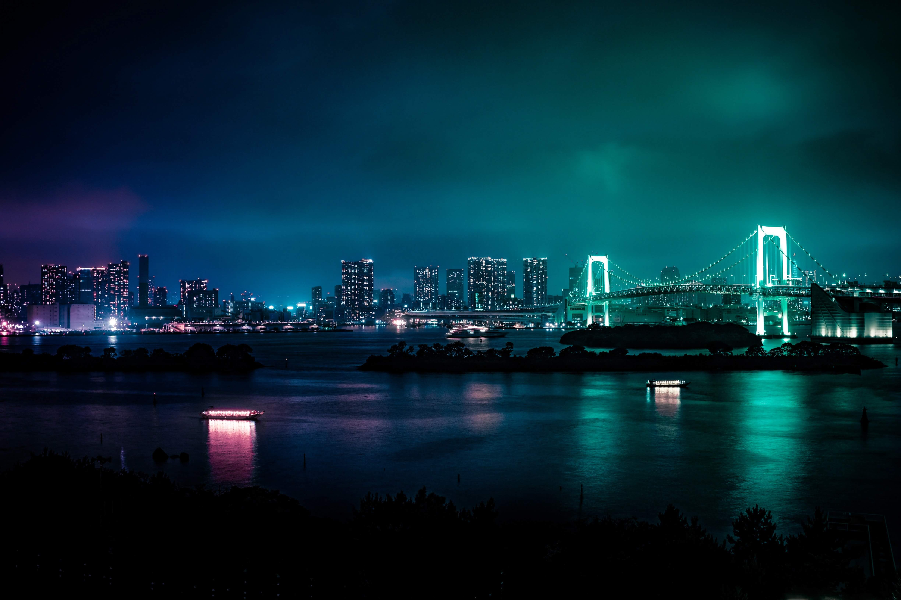
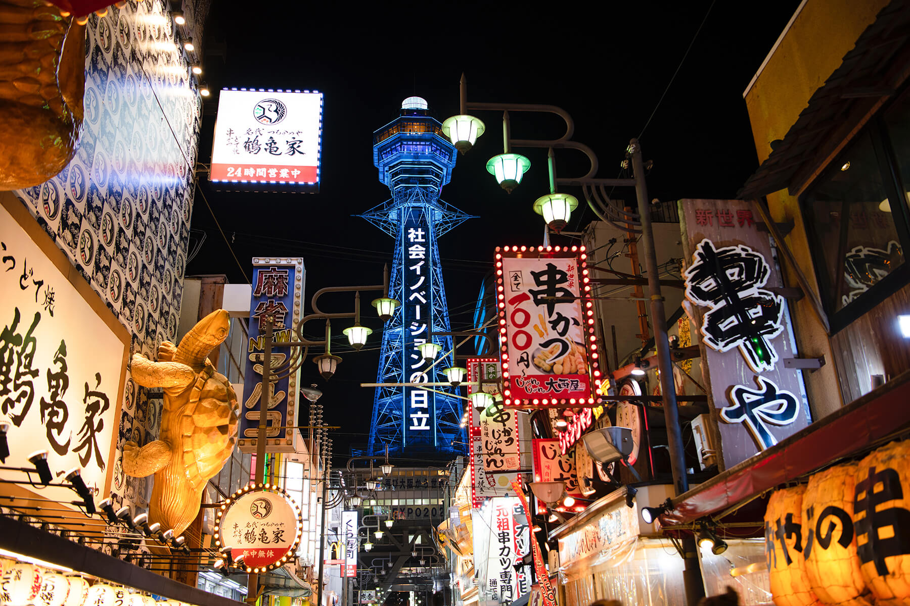
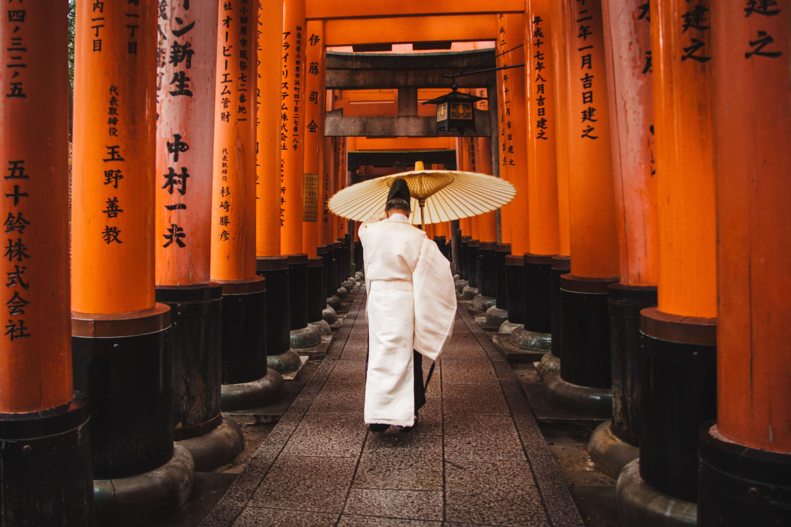
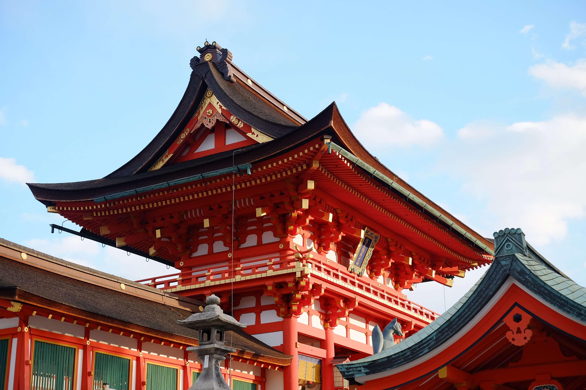

A Jornada possui o pacote ideal para seu estilo e orçamento. Conheça as belas paisagens e cultura milenar desta bela país!

Tóquio é uma cidade vibrante e cosmopolita, com seus templos históricos, museus de arte moderna e arranha-céus icônicos. Não perca a chance de mergulhar em sua atmosfera fascinante.
Ver detalhes
Osaka é uma cidade agitada e moderna no Japão. A cidade é famosa por sua gastronomia deliciosa e por ser um excelente ponto de partida para explorar outras cidades japonesas próximas.
Ver detalhesR$4.000
Em até 12x!
Viaje pagando em até 12 parcelas no cartão, à vista no crédito com 5% de desconto ou no Pix com 10% de desconto!



"A Jornada foi uma das melhores agências de viagens que eu já experimentei. O serviço ao cliente foi excepcional, e toda a equipe foi muito atenciosa e prestativa."

Minha viagem para Tóquio foi incrível. O itinerário personalizado me permitiu muito em pouco tempo. Excedeu minhas expectativas e já quero viajar com a Jornada novamente!

Minha viagem para Osaka foi inesquecível! A Jornada organizou tudo de forma perfeita, recomendo de olhos fechados!